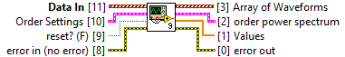
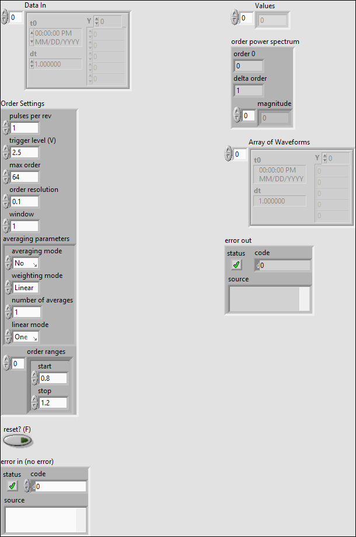
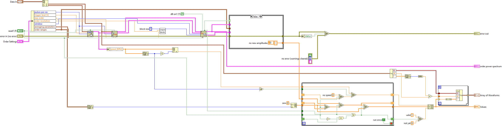
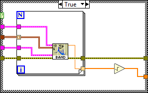

Order power spectrum for the FlexLogger plug-in Process.vi - the shipping example Order Power Spectrum (Analog Tach, DAQmx).vi with the DAQmx Read replaced by Data In.
Data In = Read 1D Wfm (DBL)_v2 data: element 0 accelerometer (g), element 1 analog pulse tach (V).
Steps: OAT Analog Tacho Process -> speed profile; OAT Convert to Even Angle Signal; oax_Compute Order Resolution -> block size; OAT Order Power Spectrum; SVFA Power in Band for each order range (sqrt -> g rms).
Array of Waveforms (to Write 1D Wfm, Auto Calculate T0 = TRUE), one 1-point waveform per channel, t0 = block t0, dt = block length: RPM, one order amplitude (g rms) per order range, Spectrum Valid (0 until the first spectrum after reset). Values are held between spectra so every channel is written every block.
reset? restarts the tach processing, resampling and averaging - wire TRUE on the first Process call after Configure Session.



